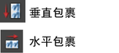

通过选择，可以访问“建模”(Modeling)菜单集中的这些选项。
画布(Canvas)
- 画布比例(Canvas Scale)
-
设置在画布上绘制时调整模板笔刷全局比例所依据的因子。例如，如果模板笔刷的全局比例设置为 2，并将画布比例设置为 0.5，则在画布上绘制时模板笔刷将使用全局比例 1。有关设置笔刷的全局比例的信息，请参见 Paint Effects 笔刷设置的“全局比例”(Global Scale)部分。
- H 向折回(Wrap H)、V 向折回(Wrap V)
-
这些折回选项可用于创建无缝重复纹理。有关创建无缝重复纹理的信息，请参见创建无缝重复纹理。
启用“H 向折回”(Wrap H)将以水平方向“折回”画布。经过画布顶部或底部的任何笔划会在相对的边缘延续，就好像画布是沿左边缘和右边缘接合起来的
启用“V 向折回”(Wrap V)将以垂直方向“折回”画布。经过画布左侧或右侧的任何笔划会在相对的边缘延续，就好像画布是沿顶部边缘和底部边缘接合起来的。
您可以使用“画布 > 侧滚”(Canvas > Roll)命令查看折回边的接合位置。有关详细信息，请参见创建无缝重复纹理中的侧滚画布。
也可以使用“Paint Effects”工具栏上的折回图标来折回画布。
 - 使用画布灯光(Use Canvas Light)
-
因为画布就是一个与摄影机法线正交的平面，场景中的灯光会影响画布上笔刷笔划的外观。您可以使用场景中的灯光照亮画布，或使用画布灯光。画布灯光是平行光。可以将灯光旋转到新位置，但不能更改其任何其他属性。
启用此选项将全局画布灯光（平行）用于笔刷，而不是使用场景中的灯光。
- 灯光方向(Light Direction)
-
如果启用“使用画布灯光”(Use Canvas Light)，请分别指定画布光源在 X、Y 和 Z 框中的方向。
- 强制管方向沿路径(Force Tube Direction to be Along Path)
-
当“强制管方向沿路径”(Force Tube Direction to be Along Path)处于启用状态时（默认情况），“画布”(Canvas)模式下，ElevationMin 值大于 0.5 的带有管的笔刷将沿路径而不是沿法线绘制。在画布上绘制时，具有植物笔刷在需要的方向上绘制的效果。
也可以“Paint Effects”面板工具栏上的翻转管方向图标来翻转管的方向。

场景(Scene)
- 场景比例(Scene Scale)
-
在场景中绘制时，将因子按照希望的模板笔刷全局比例进行调整。例如，如果模板笔刷的全局比例设置为 2，则将场景比例设置为 0.5，在场景中绘制时，模板笔刷将使用全局比例 1。有关设置笔刷的全局比例的信息，请参见 Paint Effects 笔刷设置的“全局比例”(Global Scale)部分。
- H 向场景折回(Scene Wrap H)、V 向场景折回(Scene Wrap V)
-
这些换行选项可用于创建无缝重复纹理的动画。有关详细信息，请参见创建动画纹理。
也可以在 3D 中使用它们得使类似卡通的重复环境（例如，树在整个场景中水平移动可以看做一个卡通角色跑过，然后重复移动）。
虽然笔划不会在线框中折回，它们将在渲染场景后折回。
启用“H 向折回”(Wrap H)以水平“折回”场景视图平面。所有移过视图平面顶部或底部的笔划将继续保留在相对的边，犹如视图平面的左边缘和右边缘是连接在一起的。
启用“V 向折回”(Wrap V)以垂直“折回”场景视图平面。所有移过视图平面左侧或右侧的笔划将继续保留在相对的边，犹如视图平面的顶部和底部是连接在一起的。
- 强制真实灯光(Force Real Lights)
-
当笔划笔刷的“真实灯光”(Real Lights)打开时，绘制的着色和反射高光将由灯光的实际场景决定。启用“强制真实灯光”(Force Real Lights)以强制“真实灯光”(Real Lights)选项在所有新的笔划中打开，无论模板画笔设置如何。这意味着您的场景必须具有灯光，否则绘制将没有照明。在绘制笔划之后，可以在画笔节点的笔划中禁用“真实灯光”(Real Lights)。
- 强制深度(Force Depth)
-
启用此选项可以强制将“深度”(Depth)选项在所有新的笔划中打开，无论模板画笔设置如何。如果采用场景深度，并希望确保所有笔划使用深度，即使绘画的笔刷不使用，这将非常有用。